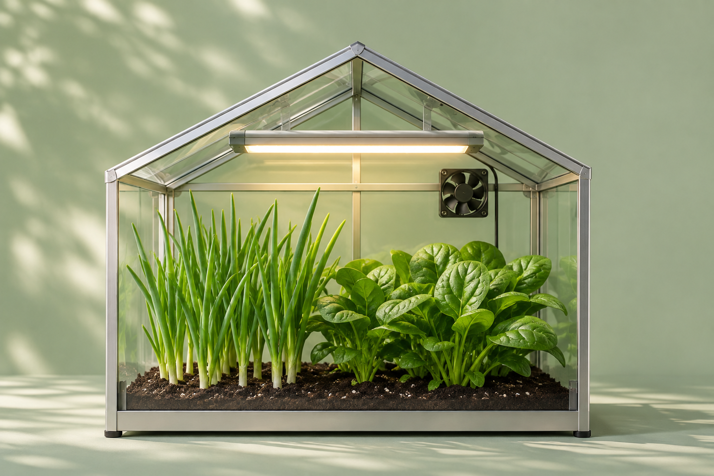

ХЭМЖИЛТИЙН ТҮҮХ
Демо горим
GREENHOUSE · LET’S GROW
Хүлэмжээ
нэг харъя.
Хэр дулаан байна, услах хэрэгтэй юу? Эндээс хараад тохируулаарай.
Хүлэмжээ удирдъя
✦ GREENHOUSE 01Юу тарьж байгаа вэ?Ногоон сонгино, бууцайТуршилтын загвар
ХҮЛЭМЖ ДОТОР
Одоо ямар байна?
Түүхийг харъя ↗
ТӨХӨӨРӨМЖҮҮД
Юу ажиллаж байна?
Удирдлага руу →ТӨХӨӨРӨМЖҮҮД
Удирдлага
Услах уу, гэрэл асаах уу? Өөрөө удирдах эсвэл автоматаар ажиллуулах горимоо сонгоорой.
Хэрэв… яах бол? 🧪
Халуун өдөр, хуурай хөрс, ус багатай сав. Нэгийг нь сонгоод демо хүлэмж яаж хариулахыг үзье.
ХЭМЖИЛТИЙН ТҮҮХ
Хэмжилтийн түүх
Өмнөх хэмжилтүүдээ харьцуулъя. Хэрэгтэй бол CSV файлаар татаж аваарай.
Сүүлийн хэмжилтүүд
| Цаг | Температур | Агаарын чийг | Хөрсний чийг | Гэрэл | Усны түвшин |
|---|
ХҮЛЭМЖЭЭС ИРСЭН МЭДЭЭ
Юу өөрчлөгдөв?
Ус багассан уу, сэнс ассан уу? Анхаарах зүйлс, хийсэн үйлдлүүд энд цуглана.
Сүүлийн мэдээ
ХҮЛЭМЖ 01
Тохиргоо
Хэзээ услах, хэзээ гэрэл асаахыг энд тохируулна. Ногоонууддаа тааруулаад үзээрэй.
ESP32 холболт
Одоохондоо демо дээр туршиж болно. ESP32-оо тохируулж холбоход хүлэмжийн бодит хэмжилт 10 секунд тутам шинэчлэгдэнэ.